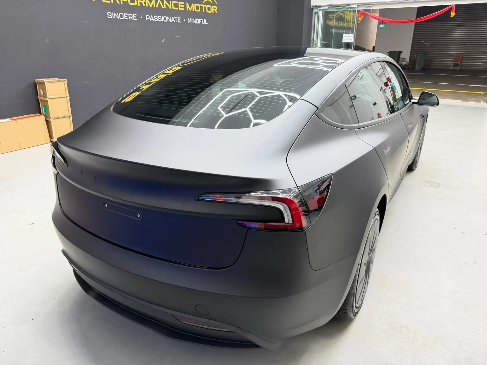

Featured (paid)Car wrap and PPF in Singapore
In short: 2 workshops on this site list car wrap and ppf, across 2 industrial estates. The shortlist below shows 2 with strong Google ratings; every one is listed by area further down.
A car wrap changes colour with vinyl, while paint protection film (PPF) is a clear or coloured layer that shields the paint from stone chips and scratches. Window film is a separate service. Ask what film is used, how long the job takes, and check current LTA rules before changing your car's colour.
Featured (paid) in wrap and ppf
Paid placements, shown on their own. They are not part of any ranking or order on this page.
Shortlist
Shortlist: 2 of 2 listed workshops, ordered by Google rating and number of ratings together (the formula is on the About page). Paid listings are never in it. Every workshop is listed by area further down this page.
Basic listing
Wrap and PPF
Horizon Auto Tuners
4.8 (6 Google ratings) (checked November 2026) See Google reviews
25 Kaki Bukit Rd 4, #01-48, Synergy@KB 417800, Singapore 417800
General servicing and repair
Customers mention: Car wrapping
Basic listing
Wrap and PPF
Cartistry [Toh Guan]
4.4 (28 Google ratings) (checked November 2026) See Google reviews
48 Toh Guan Rd E, #04-126 Block No 48, Singapore 608586
General servicing and repair
Ranked 17th of 20 Toh Guan Road East and Enterprise Hub workshops with 20 or more Google ratings, by rating and number of ratings together
Customers mention: Spray-on PPF, Coating, Window tinting
List your workshop
For business owners: is your workshop listed here? Claiming a listing is free.
Car wrap and PPF workshops by area
Every listed workshop for car wrap and PPF, grouped by industrial estate. Tap a name for its page with address, hours, WhatsApp and Call.
Also listed on their own websites
These workshops are filed under another service here, but their own website includes car wrap and PPF among its services: BlackNano Paint Protection Center (Bukit Batok Crescent (WCEGA Plaza)), GMA Automotive Services (Woodlands Avenue 10 (Woodlands Industrial Xchange)), Jerga Details (Kaki Bukit Industrial Estate), T7 Auto Care (Ang Mo Kio Industrial Park 2), TTS Eurocars Service Centre (MacPherson Road) and VAE Motor Works Electrical & Battery (Yishun Industrial Park A).
What car wrap and ppf involves
A wrap changes the look of a car with vinyl film. Paint protection film (PPF) is a clear film that protects the paint from stone chips and light scratches. Both need clean, well-prepared paint before the film goes on.
Signs you may need it
- You want a new colour without a respray
- Stone chips on the bonnet and bumper
- Protecting a new car's paint
What to ask the workshop
- Which film brand and type is used
- Which panels are covered
- How edges and door jambs are handled
- Whether a colour change needs LTA registration
Questions about car wrap and ppf
Does a colour wrap need to be registered?
A wrap that changes the car's main colour may need to be registered with LTA. Check LTA's current rules first.